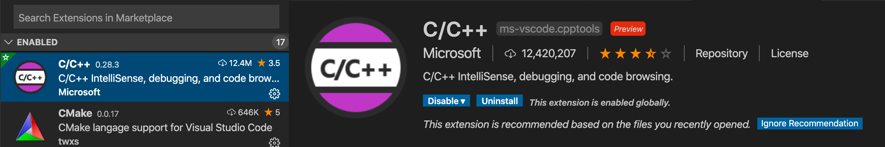
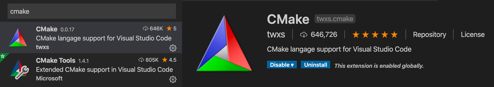
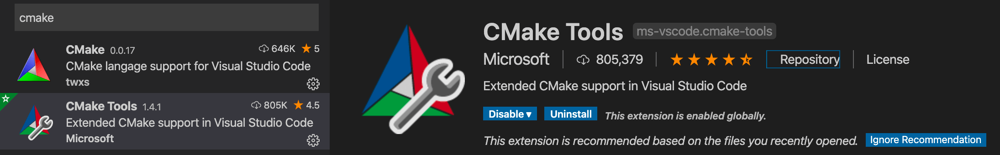
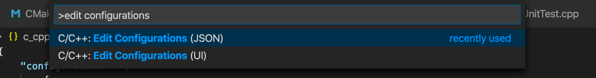
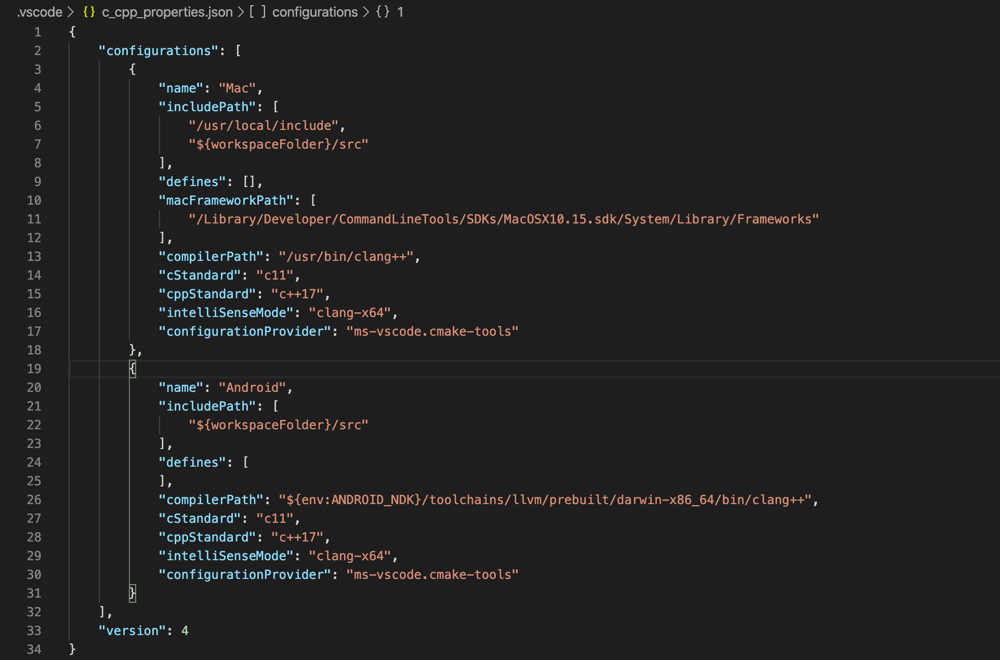
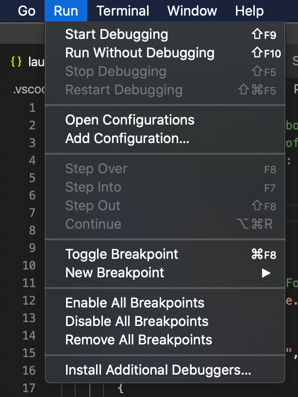
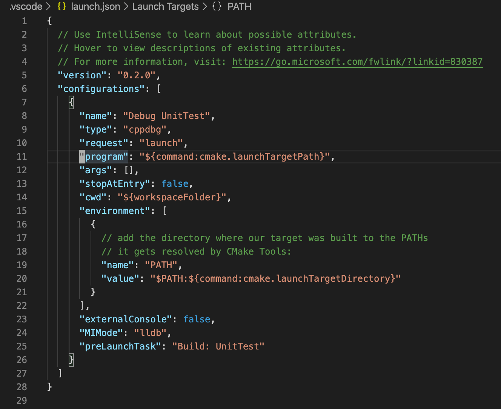
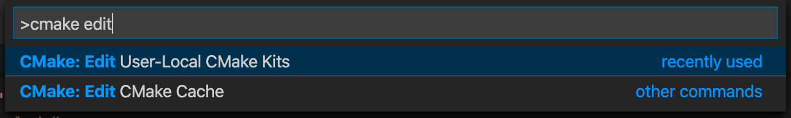
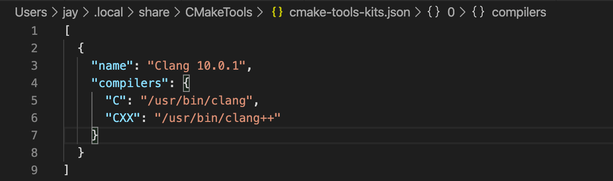
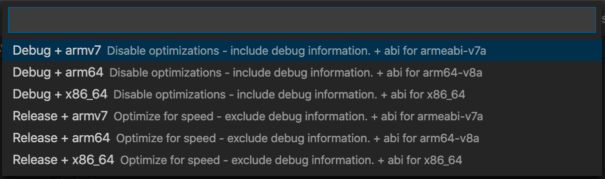

VS Code + Cmake Tools, 搭建C/C++跨平台（NDK、iOS）开发环境
最近公司新需求，要求用C/C++实现部分核心代码，打包成静态库跨平台（Android和iOS）使用。 作为Android开发出身的C/C++老白程序员兴奋不已（又可以开心的学习niubility的C/C++了），但之前写JNI代码的集成环境都是Android Studio，最后打包生成的so库也是面向Android平台的。 有什么IDE适合这种跨平台开发的呢？请教了公司写C的大牛（独立开发了一套跑在单片机上的Linux操作系统的非著名程序员，emacs发烧友），大牛说C/C++并没有什么特好用的IDE，用的人多的可能Eclipse算一个。 毕竟大神是emacs党，还需要IDE？ 可我一VIM党，也用emacs开发C/C++？ Sorry, I Can’t Do It。
于是我就琢磨有啥其他选项，想着要不试试VS Code，这家伙近些年混得风生水起的。然后，经过一番摸索后总算弄了一套C/C++ + Cmake的环境，分析给各位大佬们，有啥建议还请多赐教。
插件安装
用VS Code搭建开发环境，插件是必不可少的。
VS Code对C/C++的支持
这里我选择了C/C++插件，官方提供的，应该值得信赖。

Cmake支持
编译工具这里我选择了cmake，所以安装Cmake和Cmake Tools这两个插件。

Cmake插件是让VS Code支持Cmake语言。

而Cmake Tools插件则是能让VS提供各种Cmake编译相关的小工具，包括在底部状态栏显示一些快捷工具。
安装上述三个插件后，重启VS Code让插件生效。
环境配置
首先随便创建一个目录，作为项目根目录，以Android的NDK配置为例。
配置VS Code的C/C++工具链
Cmd + Shfit + P，输入edit configuration：

编辑c_cpp_properties.json配置文件：

这里我添加了Android配置：
{
"name": "Android",
"includePath": [
"${workspaceFolder}/src"
],
"defines": [
],
"compilerPath": "${env:ANDROID_NDK}/toolchains/llvm/prebuilt/darwin-x86_64/bin/clang++",
"cStandard": "c11",
"cppStandard": "c++17",
"intelliSenseMode": "clang-x64",
"configurationProvider": "ms-vscode.cmake-tools"
}
这里解释一下这几个重要配置项的作用：
name：配置名称，会显示在状态栏上。includePath：VS Code搜索include头文件的路径(后面会被Cmake tools取代)。compilerPath：编译器路径，这里我选择的llvm的clang。这也是目前NDK官方指定的，其他编译器都被Google删掉了…configurationProvider：这个配置是告诉VS code，让Cmake Tools插件根据CMakeLists.txt的配置来指定C/C++的代码环境，如在CMakeLists.txt中配置了link_directories(dir_xx)命令，VS Code就能正确识别出#Include<dir_xx/xxx.h>头文件。同时也就取代了上面的includePath配置。
添加上面的配置后，状态栏左下角就可以选择Android这个编译环境配置了：
Cmake Tools配置
使用CMake Tools启动调试
菜单依次选择Run –> Add Configuration ：

添加启动配置：

修改点：
program：启动的二进制程序路径environment：启动时的环境变量配置
完成以上配置后，编写C/C++和CMakeLists.txt代码，就可以Cmd + Shfit + P依次执行Cmake Configure、Cmake Build、编译出C/C++的执行文件，然后Shift + F7选择执行目标运行程序，或者在VS code编辑器上加断点，Ctrl + F5 调试C/C++代码了。
但这是常规的C/C++项目的套路。可我们需要使用NDK交叉编译，于是我们还需要继续添加如下配置：
配置Cmake Tools的工具包
Cmd + Shfit + P，输入cmake edit user-local cmake kits：

默认情况下，VS code会生成如下配置项：

添加自定义的Cmake kits：
{
"name": "Clang Android",
"compilers": {
"C": "/Users/jay/Library/Android/sdk/ndk-bundle/toolchains/llvm/prebuilt/darwin-x86_64/bin/clang",
"CXX": "/Users/jay/Library/Android/sdk/ndk-bundle/toolchains/llvm/prebuilt/darwin-x86_64/bin/clang++"
},
"environmentVariables": {
"ANDROID_NDK": "/Users/jay/Library/Android/sdk/ndk-bundle"
},
"toolchainFile": "${env:ANDROID_NDK}/build/cmake/android.toolchain.cmake",
"cmakeSettings": {
"CMAKE_INSTALL_PREFIX": "${workspaceFolder}/out/android/${variant:buildType}/${variant:abi}",
"ANDROID_TOOLCHAIN": "clang",
"ANDROID_NATIVE_API_LEVEL": 21,
"ANDROID_STL": "c++_shared",
"ANDROID_ABI": "armeabi-v7a",
"ANDROID_CPP_FEATURES": "rtti exceptions"
}
}
配置参数的意思基本上看名字就能猜出来是什么意思，需要单独解释的是cmakeSettings这个参数，这里面配置的参数会在执行cmake命令时以“-Dname=val”的形式传入参数（如”ANDROID_ABI”: “armeabi-v7a”在编译时，则会变成“-DANDROID_ABI=armeabi-v7a”传入），所以这里我们可以自定义合适的参数传入Cmake用于构建。配置完成后，可在状态栏选择我们的“Clang Android” Kits配置。
但是大家都知道，在写JNI代码时，往往需要针对不同的CPU架构编译不同的so库，难道需要每次修改这里的配置参数吗？当然有更优秀的方法！是时候向大家介绍CMake Variants这个家伙了。
CMake Variants配置
Cmake Tools的默认varant配置是这样的：
{
"buildType": {
"default": "debug",
"description": "The build type.",
"choices": {
"debug": {
"short": "Debug",
"long": "Disable optimizations - include debug information.",
"buildType": "Debug"
},
"release": {
"short": "Release",
"long": "Optimize for speed - exclude debug information.",
"buildType": "Release"
},
"minsize": {
"short": "MinSizeRel",
"long": "Optimize for smallest binary size - exclude debug information.",
"buildType": "MinSizeRel"
},
"reldeb": {
"short": "RelWithDebInfo",
"long": "Optimize for speed - include debug information.",
"buildType": "RelWithDebInfo"
}
}
}
}
默认为我们提供了几种打包配置，我们可以扩展一下，新建配置文件projectName/.vscode/cmake-variant.json，添加如下配置：
{
"buildType": {
"default": "debug",
"description": "The build type.",
"choices": {
"debug": {
"short": "Debug",
"long": "Disable optimizations - include debug information.",
"buildType": "Debug"
},
"release": {
"short": "Release",
"long": "Optimize for speed - exclude debug information.",
"buildType": "Release"
}
}
},
"abi": {
"default": "armeabi-v7a",
"description": "abi for android build",
"choices": {
"armeabi-v7a": {
"short": "armv7",
"long": "abi for armeabi-v7a",
"settings": {
"ANDROID_ABI": "armeabi-v7a"
}
},
"arm64-v8a": {
"short": "arm64",
"long": "abi for arm64-v8a",
"settings": {
"ANDROID_ABI": "arm64-v8a"
}
},
"x86_64": {
"short": "x86_64",
"long": "abi for x86_64",
"settings": {
"ANDROID_ABI": "x86_64"
}
}
}
}
}
我们在settings配置项中添加了ANDROID_ABI参数，作用和Cmake kits中的cmakeSettings是一样的，这样我们可以删掉cmake kits中的ANDROID_ABI参数配置了。参数的详细信息可以参考CMake Variants，配置完成后，可在状态栏选择variant：
点击variant选项，我们可以看到2 x 3 = 6种组合选项可供选择：

这样我们需要编译不同的CPU架构的so库时，选择不同的variant配置即可。
至此，我们就可以愉快的跨平台开发C/C++代码了～